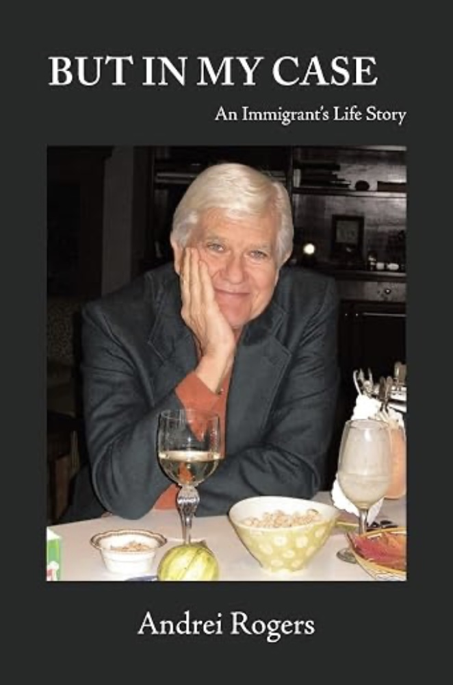

But in My Case: An Immigrant's Life Story
Andrei's own account of his family's journey — from Harbin and Shanghai to Berkeley, and the career in mathematical demography that carried him from Northwestern to Vienna to Boulder. Written for his children and grandchildren, it's the personal history behind the timeline on the home page.
View on Amazon